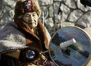
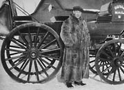
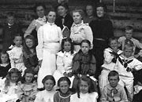
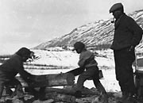
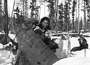
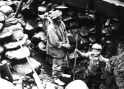
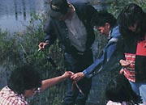

Pour de nombreuses personnes, particulièrement pour les Premières nations, il est important d’enseigner de différentes façons aux jeunes. Les comportements et les coutumes sont transmis d’une génération à l’autre par les exemples et les contes. On respecte grandement les aînés pour leur sagesse et leur expérience et les contes font partie intégrante de la transmission de connaissances d’une génération à l’autre.
Les missionnaires offraient un enseignement de base aux enfants autochtones durant les premières années, mais lorsque les agglomérations se sont stabilisées, on a établi un système d’enseignement plus formel. Même si Dawson était une ville en plein essor dès 1897, un observateur a remarqué qu’étant donné que les salaires et le prix du bois étaient élevés, il faudrait probablement encore un an avant que la construction d’une école soit terminée.
Les églises ont mis sur pied des externats de jour et des pensionnats pour les enfants autochtones. Bien qu’il y eut un bon enseignement dans les pensionnats et que ceux-ci permettaient aux jeunes de rencontrer des élèves d’autres groupes et d’autres endroits, on a retiré les enfants de leur famille et de leur culture. Les pensionnats exploités par les églises ont été en activité jusque dans les années 1960.
Le gouvernement du Yukon a finalement mis sur pied un réseau scolaire à compter de 1900 et offre un enseignement postsecondaire depuis 1963. On enseigne aux élèves des Premières nations dans leur localité et tous les élèves ont l’occasion d’étudier les langues, la culture et l’histoire autochtones du Yukon. Depuis quelques années, on offre des programmes d’immersion en français, des salles de classe virtuelles et une formation à distance.
«Nous apprenons de nos parents. Nous apprenons de nos grands-parents.»
Clara Schinkel, Walking Together/Ditth'ëk Ts'ä Tr'ëtädal
Passer au tableau Où on aime se retrouverDe vieux adages précieux
Annie Ned : Life Lived Like a Story.
(Ci-dessus) Élèves devant l’école publique de Dawson City (1913).
AY, collection Betts nº 9432.
Angela Sidney à l’ouverture du Collège du Yukon. Elle donna un nom tlingit au Collège : Ay Am Da Goot (Ayamdigut) «Elle se leva et s’en alla».
Gouvernement du Yukon
Bill MacBride (vers 1956). MacBride a contribué à la création du musée MacBride, un des endroits qui nous aident à préserver l’histoire et à en apprendre sur notre passé.
AY, collection Hunston nº 2355
École communautaire dans les champs aurifères (sans date).
AY, collection Adams, Larkins et Cantwell nº 9082
John Martin regarde ses fils scier du bois à Ross River (avril 1928).
AY, collection Tidd, nº 7158
Pearl Geddes et son cousin George Jackson s’arrêtent pour le lunch durant un voyage à Hundred Mile. Ils amenaient le révérend Ward visiter une famille (vers 1940). Ils avaient appris de leur famille la façon de voyager durant l’hiver.
AY, collection Ward nº 8814.
Le mineur Arthur Hester aidé du jeune Alex Hare, au ruisseau Davidson, dans la région de Mayo (vers 1940).
AY, collection Hare nº 6993
Hazel Bunbury et un groupe d’élèves en langues autochtones.
AY, collection du Centre des langues autochtones du Yukon